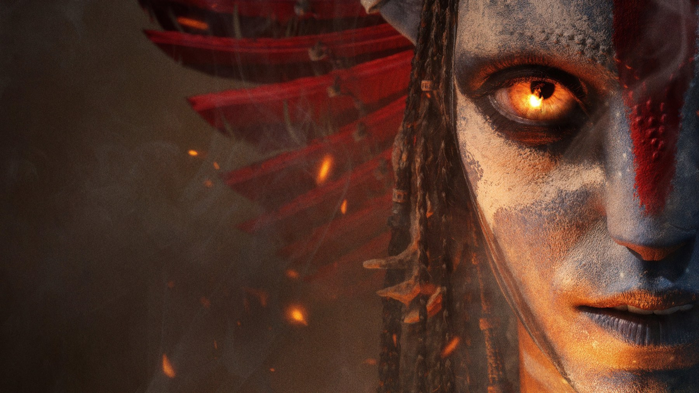
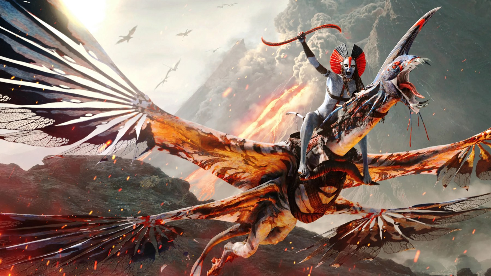

Avatar: Fire and Ash
Il terzo viaggio su Pandora è il più cupo e il più spettacolare: Cameron racconta il lutto e il fuoco, Oona Chaplin regala una cattiva memorabile, ma la storia gira in tondo
Sono passati tre anni da La via dell'acqua e Pandora si accende di nuovo, con il capitolo più lungo, più cupo e forse più ambizioso della saga di James Cameron. Avatar: Fire and Ash, uscito in Italia come Avatar: Fuoco e cenere il 17 dicembre 2025, dura tre ore e diciassette minuti e porta la famiglia Sully a confrontarsi non solo con gli umani della RDA, ma con un popolo Na'vi che ha smesso di credere in Eywa. Il risultato divide: tecnicamente è un altro miracolo, narrativamente un passo che sa di già visto.
Di cosa parla Avatar: Fire and Ash?
Jake Sully e Neytiri, ancora Sam Worthington e Zoe Saldaña, fanno i conti con un lutto che ha cambiato la famiglia. Sul loro cammino compare il clan Mangkwan, il popolo della cenere, guidato dalla feroce Varang: una comunità devastata da un'eruzione vulcanica che ha perso la fede nella divinità di Pandora e ha scelto il fuoco come nuova religione. Intanto gli umani tornano a minacciare i tulkun, le creature simili a balene già al centro del film precedente, e il colonnello Quaritch di Stephen Lang continua la sua caccia.
Tornano anche Sigourney Weaver nei panni della giovane Kiri e Kate Winslet come Ronal. Cameron ha scritto la sceneggiatura con Rick Jaffa e Amanda Silver.

Varang, la cattiva che mancava
La vera novità del film è Oona Chaplin. La sua Varang è magnetica, elegante e crudele, e grazie alla performance capture l'attrice riesce a far arrivare ogni sfumatura di uno sguardo anche sotto il corpo digitale. Per la prima volta la saga ha un antagonista Na'vi, e questo cambia le regole: il conflitto non è più solo tra natura e colonizzatori, ma dentro Pandora stessa.
È anche il cuore tematico del film. Come ha notato Paolo Nizza su Sky TG24, Cameron questa volta racconta le conseguenze dell'eroismo più che l'eroismo, e trasforma il dolore della famiglia Sully nel motore del racconto. Zoe Saldaña, in particolare, dà a Neytiri una rabbia e una fragilità nuove.
Chi sono i mercanti del vento?
Il film non vive solo di cenere. Accanto al popolo del fuoco compare una comunità di mercanti, i mercanti del vento, guidata da Peylak, a cui David Thewlis presta voce e movimenti. Le loro navi sono creature simili a gigantesche meduse volanti, e basta una sequenza di assalto aereo per capire dove Cameron mette ancora il cuore migliore della sua fantasia: nel bestiario. Anche una parte della critica britannica, come The Arts Desk (tre stelle), ha osservato che gli animali di Pandora lasciano un segno più forte dei Na'vi, spesso difficili da distinguere uno dall'altro. Noi la vediamo più o meno così: l'immaginario è sempre un passo avanti ai personaggi.
Come è stato costruito il film?
Fire and Ash è figlio dello stesso cantiere di La via dell'acqua, da cui si è staccato perché il materiale era troppo. Le riprese sono iniziate il 25 settembre 2017, molto prima dell'uscita del capitolo precedente.
Anche la musica ha una storia lunga. Simon Franglen, che ha firmato la colonna sonora uscita il 5 dicembre 2025, ha raccontato che il lavoro è durato sette anni e ha inventato due strumenti, uno a corde e uno a percussione, pensati come se fossero suonati dai Na'vi. L'album conta 37 tracce, per due ore e undici minuti, e riprende in più punti il tema originale di James Horner. Il brano guida è Dream as One di Miley Cyrus, scritto con Mark Ronson e Andrew Wyatt e uscito il 14 novembre 2025, mentre Zoe Saldaña canta in lingua na'vi The Future and the Past, che chiude il disco. La partitura ha vinto l'Hollywood Music in Media Award come miglior colonna sonora fantascientifica, a novembre 2025.
Lo spettacolo: Pandora come non l'avevamo mai vista
Sul piano visivo, Fire and Ash è difficile da battere. Dopo la terra della foresta e l'acqua della barriera, Cameron porta in scena il fuoco e il cielo, con i mercanti del vento e le loro navi volanti, battaglie aeree di enorme scala e paesaggi vulcanici che in 3D hanno una profondità impressionante. Il riconoscimento è arrivato qualche mese dopo: a marzo 2026 il film ha vinto l'Oscar per gli effetti visivi. È un film da vedere al cinema, o almeno sullo schermo più grande che avete.

La nostra sintesiIl fuoco su Pandora è la cosa più bella del film. La storia, un po' meno.
Cosa non funziona
Il problema è la struttura. Il film ripete in modo quasi identico lo schema del capitolo precedente: la famiglia minacciata, la fuga, l'alleanza con un nuovo popolo, la grande battaglia finale contro la RDA. Il consenso di Rotten Tomatoes, dove il film ha il 66% di recensioni positive, lo dice chiaramente, e su Metacritic la media si ferma a 61, la più bassa della saga. Più di tre ore di durata rendono queste ripetizioni ancora più evidenti.
Anche al botteghino il calo si è sentito: con circa 1,49 miliardi di dollari nel mondo secondo Wikipedia a ottobre 2026 (il conteggio risultava ancora aperto), è stato un successo enorme per qualunque altro film, ma il risultato più basso dei tre Avatar, a fronte di un budget stimato tra i 350 e i 400 milioni.
Il pubblico, in ogni caso, ha premiato il film: il CinemaScore è una A, lo stesso voto dei due capitoli precedenti. Nel 2026 sono arrivati anche i riconoscimenti tecnici, con il BAFTA agli effetti speciali e, agli Oscar di marzo, la statuetta per gli effetti visivi insieme a una candidatura per i costumi. Non è stato invece candidato come miglior film, primo della saga a restare fuori dalla categoria principale. Sul futuro, il calendario indica il quarto capitolo al 21 dicembre 2029 e il quinto al 19 dicembre 2031; Cameron aveva dichiarato che i seguiti sarebbero dipesi dal risultato di questo film.
Dove vedere Avatar: Fire and Ash
Dal 24 giugno 2026 il film è disponibile in abbonamento su Disney+ ed è a noleggio sulle principali piattaforme digitali come Apple TV, Rakuten TV, Timvision e Prime Video.
Se da un lato la trama ricalca troppo il capitolo precedente e la durata pesa, dall'altro Cameron firma il film più cupo e visivamente sbalorditivo della saga, con una Oona Chaplin indimenticabile. Imperfetto, ma ancora una volta un'esperienza che solo il cinema può dare.
Domande frequenti
Quanto dura Avatar: Fire and Ash?
197 minuti, cioè tre ore e diciassette minuti: è il capitolo più lungo della saga.
Dove vedere Avatar: Fire and Ash in streaming?
In abbonamento su Disney+, dove è arrivato il 24 giugno 2026, e a noleggio sulle principali piattaforme digitali.
Chi è Varang in Avatar: Fire and Ash?
È la leader del clan Mangkwan, il popolo della cenere, nemico dei Sully; la interpreta Oona Chaplin.
Fonti consultate (8)
- Wikipedia – Avatar: Fire and Ash
- Sky TG24 – Avatar: Fuoco e cenere, la recensione (Paolo Nizza)
- Cinefilos – Avatar: Fuoco e Cenere, recensione
- Wikipedia – Avatar: Fire and Ash (soundtrack)
- The Arts Desk – Avatar: Fire and Ash review
- Avatar.com – David Thewlis joins Avatar: Fire and Ash as Peylak
- Wikipedia – 98th Academy Awards
- JustWatch / TMDB – dove vederlo in Italia